OTIUM — практика нарочитого досуга. В античном смысле otium — не побег от работы, а время, когда внимание возвращается к памяти, пейзажу и мысли — без прикладного дедлайна.
Мы выстраиваем маршруты для неспешного присутствия, а не для чек-листа достопримечательностей: важно быть в месте, а не «потреблять» виды.
OTIUM — не туроператор. Это приглашение пройтись, остановиться и оставить маршрут незавершённым, если свет на фасаде заслуживает ещё минуты.
Исторические и справочные гербы
Bangkok
Путеводитель. Объектов в этом выпуске: 32.
Историческая справка
Бангкок (Крунг-Тхеп) — столица Таиланда и главный политический, экономический и культурный центр страны.
Основан как резиденция династии Чакри в XVIII веке, город вырос из сети каналов и храмовых комплексов в мегаполис региона. Буддийские святыни, королевская застройка и плотная застройка соседствуют с современной инфраструктурой.
В XIX–XX веках Сиам сохранил независимость и модернизировал столицу; после 1945 года Бангкок стал центром региональной экономики и туризма. Метро, аэропорты-хабы и деловые кварталы соседствуют с рынками и храмами, задавая ритм мегаполиса Юго-Восточной Азии.
Маршруты
Один день
Компактный маршрут по главным точкам путеводителя с минимальным возвратом назад пешком.
Стиль: таиландский стиль с элементами европейского барокко | Период: 1906–1913
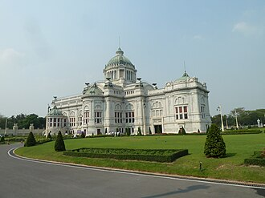
Построено в традиционном таиландском стиле с элементами западного барокко. Расположено рядом с Королевским дворцом и храмом Ват Пхра Кео. Имеет необычную восьмиугольную форму, символизирующую единство восьми провинций страны. Является местом проведения официальных церемоний и торжественных мероприятий. Названо в честь коронационной речи короля Рамы V.
Здание Ananta Samakhom Throne Hall построено в конце XIX века по указу короля Чулалонгкорна (Рама V). Изначально оно служило королевским дворцом, где проходили официальные церемонии и встречи монарха с представителями иностранных государств. Здание стало символом единства тайской монархии и национальной идентичности, став местом проведения государственных мероприятий и торжественных приемов. Это один из главных символов Бангкока и важная историческая достопримечательность Таиланда, отражающая архитектурное наследие королевства.
Bangkok Asiatique
Стиль: Традиционный тайский рынок | Период: 2006
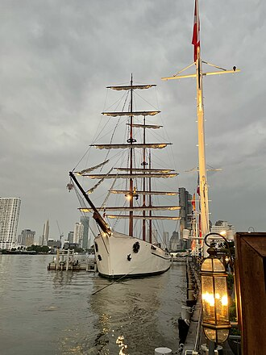
На территории комплекса регулярно проводятся фестивали и концерты. Здесь представлены товары традиционных ремесел Таиланда. Комплекс открыт ежедневно до позднего вечера. Архитектура комплекса выполнена в стиле традиционного тайского рынка. Asiatique стал популярным местом встреч и отдыха горожан.
Asiatique — крупный торговый комплекс и развлекательный центр на берегу реки Чао Прайя в Бангкоке, открытый в 2006 году. Комплекс сочетает в себе рынок, рестораны, кафе, кинотеатры и культурные мероприятия. Особенностью Asiatique является атмосфера старого города Сиама, воссозданная здесь. Asiatique привлекает туристов и местных жителей благодаря уникальной атмосфере и разнообразию развлечений.
Bangkok Bang Namphueng
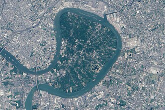
На острове находится национальный парк Крачао, включающий в себя пляжи, джунгли и рисовые поля. Пляжи острова славятся своей белоснежной песчаной береговой линией и прозрачной водой. Здесь обитают редкие виды птиц и животных, включая обезьян макак и оленей. С острова открывается панорамный вид на реку Чао Прайя и близлежащие районы Бангкока. Ежегодно проводится фестиваль крабов, привлекающий тысячи посетителей.
Остров Банг Крачао расположен в провинции Самут Пракан, примерно в 40 километрах от центра Бангкока. В прошлом остров был необитаемым и использовался в основном для выращивания манговых деревьев и каучуконосных растений. Сегодня Банг Крачао стал популярным местом отдыха местных жителей и туристов благодаря живописной природе и чистейшим пляжам. Банг Крачао привлекает любителей природы возможностью насладиться красивыми пейзажами и спокойствием вдали от городской суеты.
Bangkok Chao Phraya River
Центральный причал сети расположен рядом с известными достопримечательностями, такими как Ват Арун и Королевский дворец. Экспрессботсы работают ежедневно с раннего утра до позднего вечера. Стоимость билета составляет около 10 бат за одну поездку. Лодки следуют по нескольким маршрутам, соединяя основные районы города. Пассажиры могут воспользоваться кондиционером и туалетом во время поездки.
Чао Прайя экспрессботс — популярный вид общественного транспорта Бангкока, курсирующий вдоль реки Чао Прайя уже несколько десятилетий. Эти лодки стали неотъемлемой частью городской инфраструктуры и туристической привлекательности города благодаря удобству и низкой стоимости проезда. Популярное средство передвижения по реке Чао Прайя, позволяющее быстро добраться до разных районов Бангкока и насладиться видами городских пейзажей.
Bangkok Chatuchak Park
Период: 1984
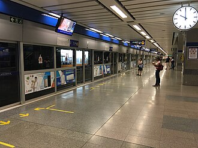
Ежедневно парк посещают около полумиллиона человек. На территории парка расположено более 15 тысяч торговых точек. Здесь представлены товары от одежды и сувениров до экзотической еды и домашних животных. Чатучак Парк является крупнейшим цветочным рынком Юго-Восточной Азии. Ежегодно проводится знаменитый фестиваль цветов, собирающий тысячи посетителей.
Чатучак Парк — крупнейший рынок под открытым небом в Таиланде, открытый в 1984 году. Изначально задумывался как место для торговли цветами и растениями, позже стал популярным местом прогулок и покупок благодаря разнообразию товаров и красочной атмосфере. Здесь регулярно проводятся тематические ярмарки и фестивали. Популярный туристический объект и одно из главных мест отдыха местных жителей.
Bangkok Chatuchak Market
Ежедневно здесь работает около 15 тысяч продавцов. На рынке представлено свыше 15 тысяч торговых точек. Чатучак открыт ежедневно, кроме понедельника. Рынок расположен вдоль улицы Кампенг-Пхет Роад. Здесь проводятся тематические ярмарки и фестивали.
Чатучак Веикенд Маркет возник в 1980-х годах как стихийная торговая площадка, постепенно развиваясь до одного из крупнейших рынков Таиланда. Со временем рынок получил крышу над некоторыми секциями, превратившись в современное сочетание открытого и закрытого пространства. Сегодня Чатучак является популярным местом среди туристов и местных жителей благодаря разнообразию товаров и оживлённой атмосфере. Чатучак — крупнейший блошиный рынок Бангкока, предлагающий широкий ассортимент товаров от одежды и сувениров до продуктов питания и антиквариата.
Bangkok Erawan Shrine
Период: 1956
Комплекс состоит из трех уровней, символизирующих три мира индуистской космологии. На территории комплекса находится статуя многоголового слона Эравана высотой около 40 метров. Ежедневно перед статуей проводится ритуал омовения, привлекающий большое количество паломников и туристов. Рядом расположен небольшой рынок сувениров и традиционных тайских сладостей. Храм открыт ежедневно с раннего утра до позднего вечера.
Эраван Шри — храмовый комплекс, расположенный на пересечении улицы Ратчапрасонг в Бангкоке. Храм был построен в 1956 году по инициативе семьи Чантавираки, одной из влиятельных семей Таиланда. Комплекс посвящен индуистскому божеству Эравана — многоголовому слону с телом дракона, который является символом долголетия и удачи. Особенностью храма является необычная архитектура: смесь индуистских мотивов и традиционного тайского стиля, дополненная элементами архитектуры Кхмерской империи. Храм привлекает туристов своей уникальной архитектурой и атмосферой спокойствия среди городской суеты, позволяя ощутить гармонию и духовность.
Bangkok Wat Suthat Swing
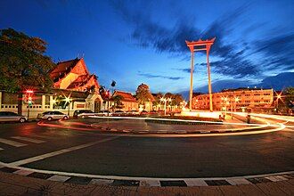
Сооружение выполнено в виде гигантского каната, натянутого между двумя столбами. На вершине моста расположена платформа с изображением Будды. Мост считается священным местом поклонения и проведения религиозных ритуалов. Ежедневно тысячи тайцев приходят сюда для медитации и молитв. Гигантский канатный мост является частью комплекса храма Ват Пхра Кео.
По легенде, сооружение символизирует гигантский гамак бога Индры, который использовался во время битвы с демонами. Мост был построен в XX веке, точную дату установить сложно. Знаменитое место паломничества туристов и местных жителей, символизирующее силу и мощь буддийской религии.
Bangkok Grand Palace
Комплекс включает Храм Изумрудного Будды, который считается одной из главных святынь Таиланда. Гранд-Палас окружён высокими стенами и рвом, символизирующими защиту королевской власти. Архитектура Град-Паласа сочетает элементы традиционного тайского стиля с элементами китайского и индийского влияния. Ежедневно проводится церемония смены караула перед воротами дворца, привлекающая внимание туристов. В комплексе регулярно проводятся государственные церемонии и религиозные ритуалы.
Гранд-Палас был основан королём Рама I в 1782 году на острове Раттанакосин, став сердцем Бангкока и резиденцией королевской семьи Сиама. Со временем комплекс расширялся и дополнялся новыми храмами и зданиями, отражающими богатое культурное наследие Таиланда. Грандиозность комплекса подчёркивает величие тайского королевства и его традиций. Гранд-Палас является символом тайской монархии и национальной идентичности страны, привлекая туристов своей уникальной архитектурой и атмосферой.
Bangkok Iconsiam
Стиль: современный минимализм с элементами традиционной тайской архитектуры | Период: 2019
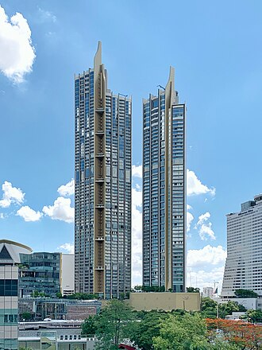
ICONSIAM открылся в декабре 2019 года. Комплекс занимает площадь около 64 тысяч квадратных метров. На территории расположены более 300 магазинов известных брендов. В ICONSIAM есть уникальный тематический парк Wonderland, имитирующий атмосферу средневекового королевства. Архитектурный стиль комплекса сочетает элементы современного минимализма и традиционных тайских мотивов.
ICONSIAM — крупный торгово-развлекательный комплекс, расположенный в Бангкоке, Таиланд. Открыт в 2019 году, проект разработан международной архитектурной студией ArchiTecta совместно с тайскими архитекторами. Комплекс включает в себя торговый центр, отель, конференц-центр, развлекательные зоны и парк развлечений. Здание привлекает туристов и местных жителей благодаря инновационному дизайну, сочетающему современные технологии и традиционные азиатские мотивы.
Bangkok Jim Thompson Art
Период: 1983
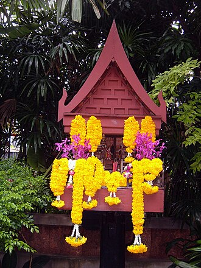
Джон Рэндольф Томпсон, известный как Джим Томпсон, основал центр после своей смерти в 1977 году. Центр расположен в историческом районе Бангкока, недалеко от королевского дворца. Коллекция музея включает около 6 тысяч экспонатов традиционных тканей и вышивок. Ежегодно музей посещают свыше 400 тысяч туристов и местных жителей. Центр активно участвует в сохранении и популяризации традиционной тайской культуры.
Центр имени Джима Томпсона был основан в Бангкоке в 1983 году и назван в честь американского предпринимателя и коллекционера азиатского искусства Джима Томпсона. Центр посвящен сохранению традиционного тайского текстиля и культуры. Здесь проводятся выставки, лекции и мастер-классы, знакомящие посетителей с искусством и ремеслами Таиланда. Здание центра является важным культурным объектом, отражающим историю и традиции тайской текстильной промышленности.
Bangkok Jim Thompson House
Стиль: Традиционные тайские деревянные дома (timber houses)
Расположен на улице Рама I, неподалеку от исторического района Дусит. Собран из традиционных деревянных построек, перевезённых из различных регионов Таиланда. Открыт для публики с целью популяризации тайского деревянного зодчества. Коллекция включает элементы интерьеров и предметы быта, характерные для традиционного тайского жилища. Является популярным туристическим объектом и культурным центром.
Джим Томпсон, американский бизнесмен и энтузиаст тайской культуры, основал дом-музей в Бангкоке в 1960-х годах. Вдохновленный традиционными деревянными постройками Таиланда, он собрал коллекцию старинных домов, перевезенных сюда из разных уголков страны. Дом стал символом сохранения культурного наследия Таиланда. Дом Джима Томпсона позволяет посетителям погрузиться в атмосферу традиционной тайской архитектуры и быта прошлых веков.
Bangkok Mahanakhon
Стиль: Стеклянная башня хай-тек стиля | Период: 2016
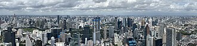
Высота башни составляет 314 метра. Это первое здание в Таиланде высотой свыше 300 метров. Архитектором здания выступил британский архитектор Эдриан Смит. На 89-м этаже расположена смотровая площадка. В башне находятся отель, офисные помещения и торговый центр.
Здание King Power Mahanakhon построено в Бангкоке в 2016 году и является одним из символов современного города Таиланда. Архитектор проекта — британец Эдриан Смит, известный своими высотными зданиями по всему миру. Башня высотой 314 метров стала первой в Таиланде, достигшей высоты свыше 300 метров. Башня привлекает туристов своей необычной архитектурой и панорамными видами на город, открывающимися с обзорной площадки на высоте 89-го этажа.
Bangkok Lumphini Park
Стиль: Тропический городской парк и озеро
Лумпини-парк расположен в районе Патум-Ван. Это единственный королевский парк Бангкока, где разрешено купание в озере. На территории парка находится статуя короля Рамы VI, установленная в честь основания парка. Ежегодно в парке проходит знаменитый международный турнир по тайскому боксу Lumpinee Boxing Stadium. В парке есть зона для пикников и барбекю.
Лумпини-парк был основан в 1920-х годах по указу короля Рамы VI. Это один из старейших королевских парков Бангкока, изначально созданный как место отдыха для членов королевской семьи и знати. Со временем парк стал любимым местом прогулок горожан и туристов благодаря живописной тропической растительности и озеру с лодочными прогулками. Парк Лумпини является символом спокойствия и красоты в центре шумного мегаполиса, предлагая отдых от городской суеты и возможность насладиться природой прямо в сердце города.
Bangkok Mbk Center
Период: 1986
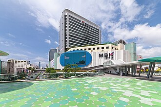
Открыт в 1986 году. Самый крупный торговый комплекс Бангкока. Известен благодаря большим торговым площадям и широким ассортиментом товаров. Ежедневно посещает около миллиона человек. Центральный район MBK работает круглосуточно.
MBK Center — крупнейший торговый центр Бангкока, открытый в 1986 году. Изначально задумывался как современное торговое пространство с множеством магазинов, ресторанов и развлекательных заведений. Со временем стал одним из символов города и популярным местом среди туристов и местных жителей. MBK Center привлекает посетителей разнообразием товаров, доступностью цен и активной ночной жизнью, делая его главным центром шопинга и развлечений столицы Таиланда.
Bangkok National Museum
Период: 1874
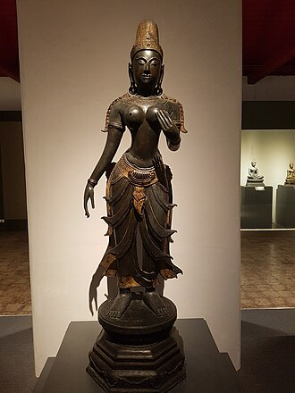
Музей расположен в историческом комплексе Дусит Прайя, построенном специально для королевских церемоний и проживания членов королевской семьи. Коллекция Национального музея насчитывает около миллиона предметов, включая древние скульптуры, керамику, изделия из слоновой кости и драгоценности. На территории музея находится Королевский дворец Дусит, включённый в список Всемирного наследия ЮНЕСКО. Ежегодно музей посещают более миллиона туристов и местных жителей. Экспозиция включает разделы, посвящённые истории королевства от древних времён до современности.
Национальный музей Бангкока был основан в конце XIX века по указу короля Чулалонгкорна (Рама V), чтобы сохранить культурное наследие Таиланда и познакомить мир с тайской историей и искусством. Со временем коллекция музея значительно расширилась, став крупнейшим хранилищем артефактов и произведений искусства страны. Национальный музей является важным образовательным и культурным центром, где посетители могут ознакомиться с многовековым наследием Таиланда, увидеть уникальные экспонаты и понять историю и традиции этой удивительной страны.
Bangkok Roayal Barges
Период: 1988
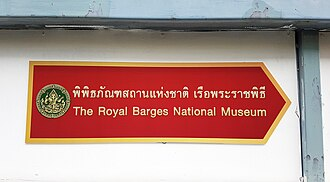
Коллекция музея включает около 40 традиционных королевских лодок, каждая из которых выполнена вручную из ценных пород дерева и украшена изысканными орнаментами и резьбой. Лодки использовались исключительно членами королевской семьи и высокопоставленными чиновниками для официальных церемоний и религиозных праздников. Некоторые лодки были украшены драгоценными камнями, слоновой костью и золотыми элементами, символизируя высокий статус владельцев. Строительство каждой лодки занимало несколько лет и требовало участия сотен мастеров. Посещение музея рекомендуется всем интересующимся историей и искусством Таиланда.
Королевский музей лодок построен в середине XX века и является уникальным памятником традиционной тайской культуры и искусства. Здесь представлены роскошные королевские лодки, использовавшиеся монархами Сиама для церемониальных и государственных мероприятий. Музей хранит память о значимой роли флота в истории Таиланда и символизирует величие и богатство прошлого королевства. Музей позволяет туристам ближе познакомиться с традициями и культурой Таиланда, увидеть уникальные экспонаты и почувствовать дух эпохи тайских королей.
Scala Cinema
Стиль: колониальный стиль
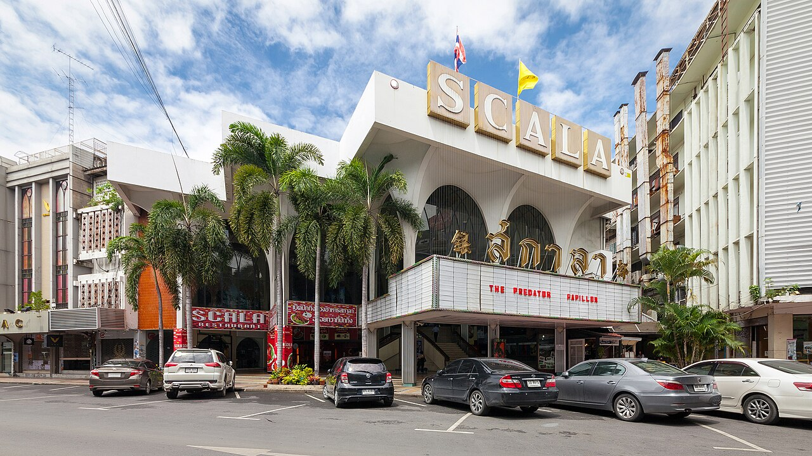
Построен в начале XX века. Архитектурный стиль сочетает элементы западной и восточной культуры. Является одним из старейших кинотеатров города. Зал оборудован роскошной отделкой и декором. Известен проведением престижных культурных мероприятий.
Кинотеатр Scala Cinema — один из старейших кинотеатров Бангкока, построенный в начале XX века. Изначально Scala задумывался как элегантное место для просмотра фильмов и культурных мероприятий, став важной частью культурной жизни города. Здание выделяется своей архитектурой и стал символом эпохи колониального стиля, сочетающего элементы западного и восточного дизайна. Scala Cinema привлекает туристов и местных жителей благодаря уникальной атмосфере и историческому значению, являясь памятником архитектуры и культурным наследием Бангкока.
Bangkok Siam Paragon
Период: 2002
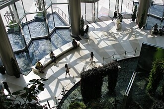
Первый крупный проект компании Central Group в Таиланде. Площадь торгового центра составляет около 460 тысяч квадратных метров. На территории расположен один из крупнейших торговых моллов Юго-Восточной Азии. Центральный атриум украшен огромным фонтаном, символизирующим реку Чао Прайя. Здесь находится первый в Таиланде кинотеатр формата IMAX.
Сиам Парагон — крупнейший торговый центр Бангкока, открытый в 2002 году. Здесь впервые в Таиланде появились торговые галереи под открытым небом, объединённые крышей. Сиам Парагон стал символом современного шопинга и развлечений столицы Таиланда. Здание привлекает туристов и местных жителей благодаря разнообразию магазинов, ресторанов, кинотеатров и развлекательных заведений.
Ton Son Mosque
Стиль: современная исламская архитектура с элементами традиционного тайского дизайна | Период: середина XX века
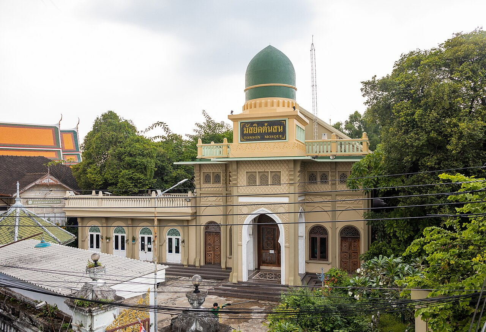
Это одна из немногих мечетей современного стиля в Таиланде. Архитектура Тон Сон вдохновлена традиционными исламскими мотивами, адаптированными под местные климатические условия. Строительство мечети финансировалось благотворительными организациями Малайзии и Индонезии. Здание украшено мозаичными панелями, выполненными местными мастерами. Ежедневно здесь проводятся молитвы и религиозные церемонии.
Тон Сон мечеть была построена в середине XX века и стала одной из первых современных мусульманских святынь Бангкока. Она сочетает элементы традиционной исламской архитектуры с современными архитектурными решениями, отражающими влияние тайского дизайна и культуры. Мечеть привлекает туристов своей необычной архитектурой и является важным местом поклонения для местного мусульманского сообщества.
Bangkok Wat Arun
Стиль: Кхмерский стиль с элементами фарфоровой отделки
Храм был построен в традиционном стиле кхмерской архитектуры, который широко использовался в Сиаме до появления тайских архитектурных форм. Архитекторы использовали тысячи кусочков китайского фарфора для украшения фасада, придавая храму неповторимый внешний вид. Период восстановления пранг занял около четырёх лет и стал значительным событием для всей страны, привлекшим внимание общественности и туристов. Храм находится недалеко от знаменитого моста Siriraj и служит популярным местом для прогулок и осмотра достопримечательностей. С вершины башни открывается живописный вид на реку Чао Прайя и окрестности.
Ват Арун, также известный как Храм Рассвета, расположен на западном берегу реки Чао Прайя в районе Тхонбури. Его строительство началось ещё в XVII веке, однако основная структура пранг была восстановлена в период с 2013 по 2017 год после разрушения во время наводнения. Ват Арун знаменит своим уникальным стилем архитектуры, сочетающим элементы кхмерского зодчества и характерной отделкой из фарфора. Особенностью храма является изящная отделка фасадов и башен пранг керамическими плитками, создающими яркие цветовые контрасты и отражающими свет солнца на рассвете и закате.
Bangkok Wat Arun View
Стиль: ванг
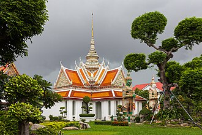
Ступенчатые башни храма символизируют священную гору Меру, центр вселенной в индийской мифологии. Храм выполнен в характерной тайской архитектурной стилистике ванг. Построен в период правления короля Таксина II. Считается одним из символов города. Вид на храм особенно красив на закате.
Буддийское святилище Ват Арун было построено в XVIII веке во времена правления короля Таксина II. Сооружение выполнено в традиционном тайском стиле архитектуры ванг, сочетает элементы индуизма и буддизма. Ват Арун знаменит своей уникальной архитектурой и впечатляющим видом на реку Чао Прайя. Здание Ват Арун является одной из главных достопримечательностей Бангкока и популярным местом для панорамных видов на город и реку Чао Прайя.
Bangkok Wat Benchamabophit
Храм посвящен королю Раме V и символизирует уважение и почитание монарха. Стены и колонны здания покрыты белым итальянским мрамором, который блестит на солнце, придавая храму величественный облик. Архитектурный стиль сочетает элементы традиционного тайского буддийского храма с элементами европейской архитектуры. Внутри храма находятся статуи Будды и другие религиозные символы, выполненные с большим искусством и вниманием к деталям. Адрес храма — улица Си Айютхая Роуд.
Ват Бенчамабопхит, также известный как Мраморный храм, был построен в конце XIX века по заказу принца Нариса в честь короля Рамы V. Храм выполнен в традиционном тайском стиле, однако его отличительной особенностью является использование мрамора из Италии, преимущественно каррарского мрамора, что придает зданию изысканный и элегантный вид. Строительство храма завершилось в 1899 году. Мраморный храм привлекает туристов своей уникальной архитектурой и утонченной отделкой, выполненной из итальянского мрамора. Это одно из немногих зданий такого типа в Таиланде, сочетающих традиционные тайские мотивы с европейским влиянием.
Bangkok Wat Kalayanamit
Стиль: классический тайский стиль
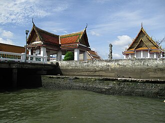
Основан в конце XIX века. Является крупнейшим буддийским храмом Бангкока. Известен великолепной статуей Будды. Архитектура храма выполнена в классическом тайском стиле. Место проведения важных религиозных церемоний.
Буддийский храм Ват Калаянamit расположен в Бангкоке и является одним из крупнейших храмов тайской столицы. Основан в конце XIX века королём Чулалонгкорном (Рама V), храм стал важным религиозным центром и местом паломничества благодаря своему величественному внешнему виду и уникальной архитектуре. Храм знаменит также своей статуей Будды, выполненной в традиционном тайском стиле, и искусной резьбой по дереву. Храм привлекает туристов и верующих своей красотой и атмосферой спокойствия, позволяя лучше почувствовать дух традиционной тайской культуры и религии.
Bangkok Wat Mahathat
Период: середина XIX века
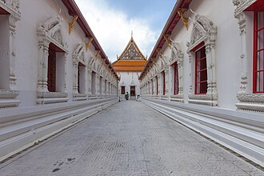
На территории храма находится одна из крупнейших бронзовых статуй Будды в Таиланде — Большой Лежащий Будда. Колонны храма украшены изображениями нагских голов, символизирующих связь с древней культурой Индии. Ват Махатхат включён в список объектов Всемирного наследия ЮНЕСКО. Ежегодно здесь проходят важные буддийские церемонии и фестивали. Название храма переводится как 'Великий монастырь мудрости'.
Буддийский храм Ват Махатхат расположен в историческом районе Анам Бури в Бангкоке. Храм был основан во времена короля Рамы III в середине XIX века, хотя археологические находки свидетельствуют о существовании храма ещё до XVIII века. В храме сохранились старинные статуи Будды и каменные колонны, увенчанные головами змей-нагов, символизирующие связь храма с древними индуистскими традициями. Одной из главных достопримечательностей является большая бронзовая статуя лежащего Будды, известная также как Большой Лежащий Будда. Храм Ват Махатхат представляет собой важный культурный и религиозный объект, отражающий многовековую историю Таиланда и влияние буддизма на местное общество.
Bangkok Wat Pho
Лежащий Будда в Ват Пхо считается одним из важнейших символов буддизма в Таиланде. Храм также знаменит своими ступами с изображениями Будды, расположенными вдоль главного зала. На территории храма находится школа тайского массажа, основанная самим королём Рамой V. Стены храма украшены тысячами фресок, рассказывающих о жизни Будды и основных учениях буддизма. Ват Пхо был расширен и дополнен залом для лежащего Будды в 1832 году.
Ват Пхо — один из старейших и наиболее значимых буддийских храмов Бангкока, основанный в XVI веке. Известен главным образом благодаря своему огромному изваянию лежащего Будды, длина которого составляет около 46 метров. Храм играл важную роль в религиозной жизни столицы Сиама и до сих пор остаётся местом паломничества и важным культурным объектом Таиланда. Главной достопримечательностью Ват Пхо является гигантский лежащий Будда, выполненный из терракотовых плиток и покрытый золотом. Это одно из крупнейших изображений Будды в мире.
Bangkok Wat Phrakaew
Стиль: сочетание традиционного таиландского стиля и индийского влияния | Период: 1785 год
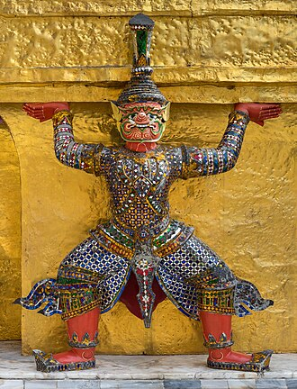
Статуя Изумрудного Будды выполнена из нефрита и считается одной из важнейших реликвий страны. В храме хранится большое количество драгоценных предметов и артефактов, представляющих культурное наследие Таиланда. Архитектура храма сочетает элементы традиционного таиландского стиля архитектуры и индийского влияния. Ежедневно в Ват Прахат Кео проводится церемония поклонения статуе Изумрудного Будды, привлекающая тысячи верующих. Храм открыт ежедневно для посетителей.
Храм Ват Прахат Кео расположен в центре Бангкока и является главной королевской буддийской святыней Таиланда. Храм был построен королём Рамой I в конце XVIII века и посвящён хранению священной статуи Будды — Изумрудного Будды. Со временем храм стал символом власти и религиозного авторитета тайских монархов. Знаменитый храм привлекает туристов и паломников своей уникальной архитектурой и богатой историей, символизируя величие и духовность тайского королевства.
Bangkok Wat Ratchanatdaram
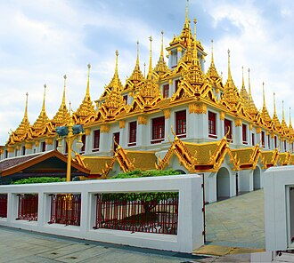
Статуя Будды выполнена целиком из золота и весит примерно 4 тонны. На территории храма находятся несколько старинных ступ и пагод. Ежедневно проводится церемония утреннего поклонения Будде. В храме хранятся реликвии и священные буддийские тексты. Вход бесплатный.
Буддийский храм Ват Ратчанратхарам расположен в районе Бангкока Каосан Роад и является одним из крупнейших храмов города. Храм был основан королём Рамой V в конце XIX века после победы над тайскими мятежниками, символизируя мир и процветание страны. Здесь находится самая большая статуя Будды в Таиланде, выполненная из чистого золота весом около 4 тонн. Храм привлекает туристов своими масштабами и уникальной золотой статуей Будды, ставшей символом богатства и величия Таиланда.
Bangkok Wat Saket
Ступа Ват Сакет расположена на искусственной горе высотой около 55 метров над уровнем моря. С вершины открывается панорамный вид на Бангкок и близлежащие районы. Ступа выполнена в традиционном стиле Аюттайи, сочетающем элементы классической тайской архитектуры. Строительство ступы завершилось в конце XIX века. Территория вокруг ступы включает парковые зоны и зелёные насаждения.
Буддийская ступа Ват Сакет, также известная как Золотая гора, была основана ещё во времена Аюттайи, однако нынешний вид приобрела после расширения в XIX веке. Сооружение расположено на искусственном холме и сочетает черты традиционного стиля Аюттайи с элементами современного архитектурного решения. Особенность Ват Сакет заключается в живописной локации и красивом виде, открывающемся с вершины горы, благодаря чему объект является популярным местом среди туристов и местных жителей.
Bangkok Wat Suthat
Стиль: тайско-китайский стиль
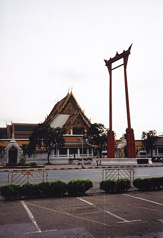
Строительство храма началось в 1874 году. Чеди Самран возвышается на высоту около 60 метров. На башне установлено большое количество золотых пластин. В храме хранится статуя Будды, выполненная из чистого золота. Ват Сутхат считается важным религиозным центром столицы Таиланда.
Буддийский храм Ват Сутхат расположен в Бангкоке и является одним из крупнейших храмов города. Построен в конце XIX века по указу короля Рамы IV во время реконструкции старого храма Ват Кхонгкам. Храм знаменит своим необычным архитектурным стилем, сочетающим элементы тайского и китайского искусства. Особо выделяется высокая башня Чеди Самран, украшенная золотыми пластинами. Храм привлекает туристов своей уникальной архитектурой и величественным видом, особенно вечером, когда включается подсветка.
Bangkok Wat Traimit
Стиль: Китайско-таиландский стиль храма включает элементы китайской архитектуры и традиционного тайского стиля.
Статуя выполнена из чистого золота и весит около пяти тонн. Возраст статуи предположительно датируется периодом Сукхотайской династии XIII века. На территории храма находится старинная китайская пагода. Ват Траймит является популярным местом паломничества буддистов. Период реставрации и повторного открытия храма — 2010 год.
Буддийский храм Ват Траймит расположен в китайском квартале Чайна-таун на улице Яоварат. Храм знаменит своей статуей Золотого Будды весом около пяти тонн и высотой почти четыре метра, выполненной из чистого золота. По легенде статуя была найдена внутри деревянного идола, изображающего индуистского бога Вишну. Возраст статуи неизвестен, предполагается, что она относится к периоду Сукхотайской династии XIII века. Храм был отреставрирован и открыт заново в 2010 году. Храм Ват Траймит привлекает туристов уникальной золотой статуей Будды и является важной частью культурного наследия Бангкока.
Bangkok Yaowarat
На улице расположено множество ресторанов кантонской кухни, предлагающих знаменитые блюда вроде жареного утки по-пекински и лапши с креветками. Шопхаусы Yaowarat Road были построены в начале XX века и сохранили оригинальные интерьеры и оформление фасадов. Улица известна своими яркими неоновыми вывесками и уличными фонарями, создающими особую романтическую атмосферу вечером. Здесь также можно найти небольшие сувенирные магазины, торгующие традиционными китайскими изделиями и украшениями. Yaowarat Road расположена рядом с историческим районом Samphanthawong, известным своими храмами и памятниками.
Улицу Yaowarat Road часто называют тайской Чайнатауном. Она сформировалась ещё в начале XX века и изначально представляла собой ряд одноэтажных лавок-шопхаусов, где торговали китайскими товарами и предлагали традиционные блюда китайской кухни. Со временем улица превратилась в яркий район с множеством ресторанов, магазинов и кафе, сохранивших атмосферу старого Бангкока. Особенностью улицы является сочетание традиционного китайского стиля с характерной тайской архитектурой, включая красочные неоновые вывески и яркие вычурные знаки. Yaowarat Road привлекает туристов своей уникальной атмосферой и возможностью попробовать аутентичные китайские блюда в окружении традиционной тайской архитектуры.